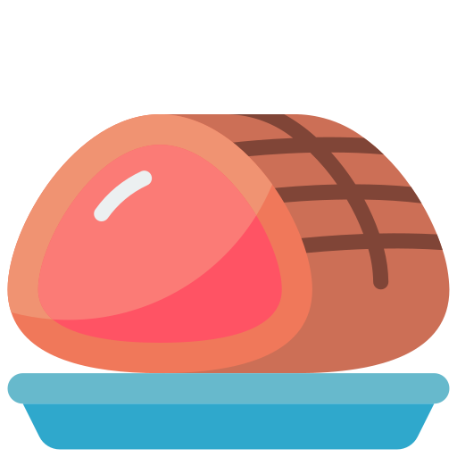

Nossos preços derretem tanto quanto nossos queijos. Veja por si mesmo(a)!

Variedade de queijos
Além de diversos tipos, você pode solicitar aos nossos colaboradores como deseja o seu pedido! Ralado? Em fatias? Triturado? Quem manda é você!

Frios em geral
Presuntos, salames, mortadelas... Temos de tudo, do jeito que você precisa! Experimente combinações deliciosas e leve o melhor dos embutidos!

Embalagens e muito mais
O quê? Está pensando que só vai encontrar frios e laticínios por aqui? Pois fique sabendo que temos embalagens, grãos, bebidas e muito mais! Não deixe de conferir!